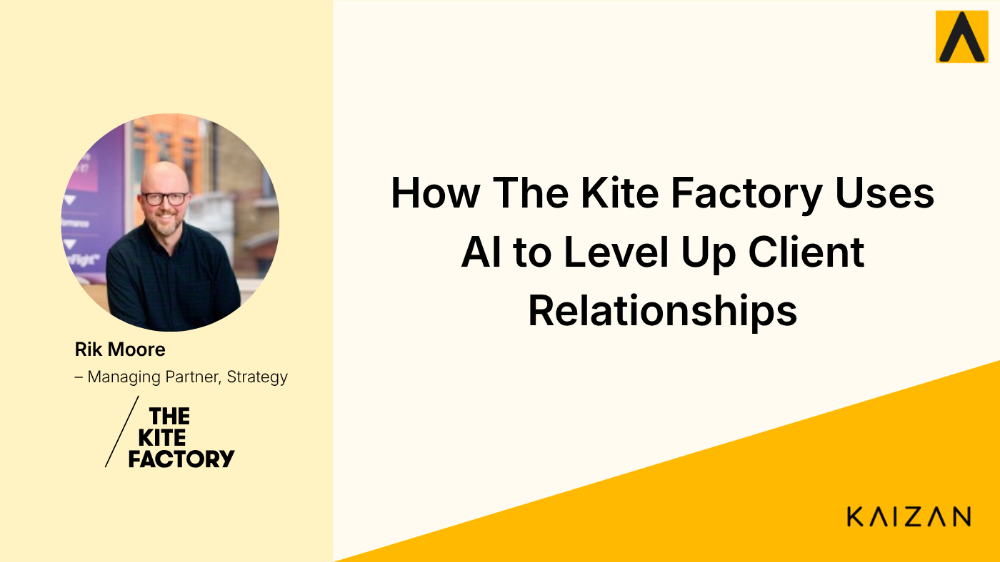

How The Kite Factory Uses AI to Level Up Client Relationships

Rik Moore, Managing Partner for Strategy at The Kite Factory, shares how AI is helping teams better understand clients, spot risks earlier, and continuously improve client interactions.
The Kite Factory is a relationship-driven media agency where success depends on deeply understanding client needs, motivations, and goals.
But truly understanding clients goes beyond what is explicitly said. It requires capturing tone, sentiment, and subtle cues within conversations.
In this case study, Rik Moore explains how Kaizan AI helps his team better understand clients, identify risks earlier, and continuously improve how they engage with clients.
Watch the full conversation
Prefer to hear it in Rik's own words? Watch the full interview on YouTube.
Key Results
Using Kaizan, The Kite Factory's strategy teams are now able to:
- Capture client sentiment and intent in every conversation — understand not just what clients say, but what they mean.
- Identify risks and opportunities earlier — spot subtle signals before they become bigger issues.
- Improve coaching and review of client interactions — replay conversations and continuously improve how teams engage with clients.
The challenge: understanding what clients really mean
Client relationships are built on understanding.
"We need to understand what drives clients, what pressures they're under, and what goals they're trying to achieve."
However, much of that understanding comes from subtle signals in conversations.
"It can be very easy to miss a subtle cue… but that could be critical."
During meetings, teams are often balancing listening, note-taking, and leading the conversation. As a result, important signals can be missed. And when communication happens over email, tone and sentiment are lost entirely.
"On emails, you don't get that sense of tone or sentiment."
The solution: capturing sentiment at scale
Kaizan enables The Kite Factory to capture and analyse client sentiment across every interaction. Instead of relying on memory or notes, teams receive structured insights after every conversation.
"Here are the key beats from the call… the sentiment… the actions to take next."
This creates a more accurate and consistent understanding of client needs.
From conversations to coaching
One of the most powerful benefits is the ability to review and improve client interactions. When presenting, it is difficult to fully observe how clients react in real time. Kaizan allows teams to revisit those moments.
"You're so focused on presenting… you can't take in every reaction."
By reviewing recordings and insights, teams can:
- improve how they communicate with clients
- refine their approach in meetings
- coach others on better client interactions
Spotting risk earlier
By analysing sentiment and communication patterns, Kaizan helps teams identify potential risks earlier.
"It helps us confirm that what we heard is what was said."
This allows teams to act with greater confidence and respond proactively.
"It has helped us spot opportunities and stop risks sooner."
Strengthening client relationships
With a clearer understanding of client sentiment and needs, teams can deliver more tailored and effective client servicing. They can respond more precisely, align better with client expectations, and build stronger relationships over time.
The impact
Since implementing Kaizan, The Kite Factory has transformed how it understands and manages client relationships. Teams now have access to deeper insights from every interaction, enabling them to:
- capture client sentiment and intent
- identify risks and opportunities earlier
- continuously improve client interactions
- build stronger, more aligned relationships
"We always thought we were good at client relationships, but this takes it to the next level. It's a game changer."